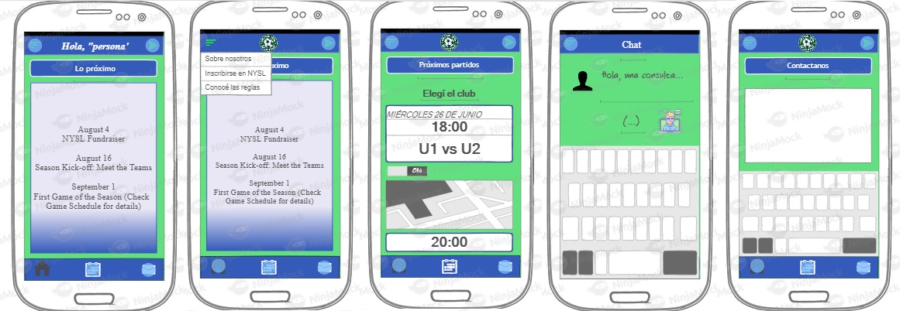

La madre de tres hijos que juegan al fútbol está llevándolos para que jueguen. Como nunca antes fue a la cancha donde esta se va a desarrollar, necesita conocer la dirección y el recorrido que debe hacer. Para esto, entra a la app de NYSL, toca el calendario y busca el primer partido de la fecha, donde le aparecerán el mapa, el horario, entre otros datos que necesita.
Juan es una persona que siempre mira las reglas antes de jugar cualquier deporte. Sin embargo, reconoce que no es algo muy común entre sus pares. Como ve que no hay nada sobre las reglas a simple vista, abre el menú del costado y "hace click" sobre la opción de reglas.
Pedro está aburrido en su casa. Pasó por todas sus aplicaciones hasta que decidió abrir la aplicación del club. Así sin más, apenas entra ve que al día siguiente habrá un acto que le interesa en el club. Por eso, que las noticias aparezcan apenas uno abre la aplicación es bueno: Pedro se enteró de algo que quizá no se hubiera enterado de otra forma. Este mecanismo se utiliza en aplicaciones como Instagram O Facebook. El usuario ya está en la aplicacióm "antes de darse cuenta".
Rubén es padre de dos hijos que van a clubes distintos y quiere saber cuándo serán los partidos de cada uno de ellos. Fácilmente,
Sally es una mamá que trabaja toda la semana y tiene que balancear los horarios de su fin de semana entre sus tres hijos. Sally, está por llevar a uno de sus hijos y quiere saber donde queda la cancha. Para eso, rápidamente clickea el calendario, pone el equipo de su hijo y selecciona la opcion de "ver mapa"
En torno a las diferentes personas y scenarios diseñados, se confeccionó un mock up:
